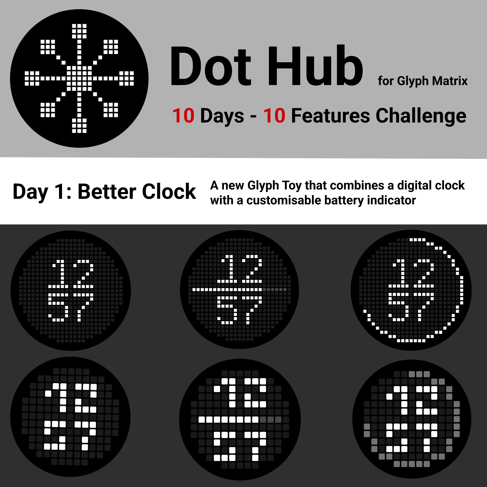
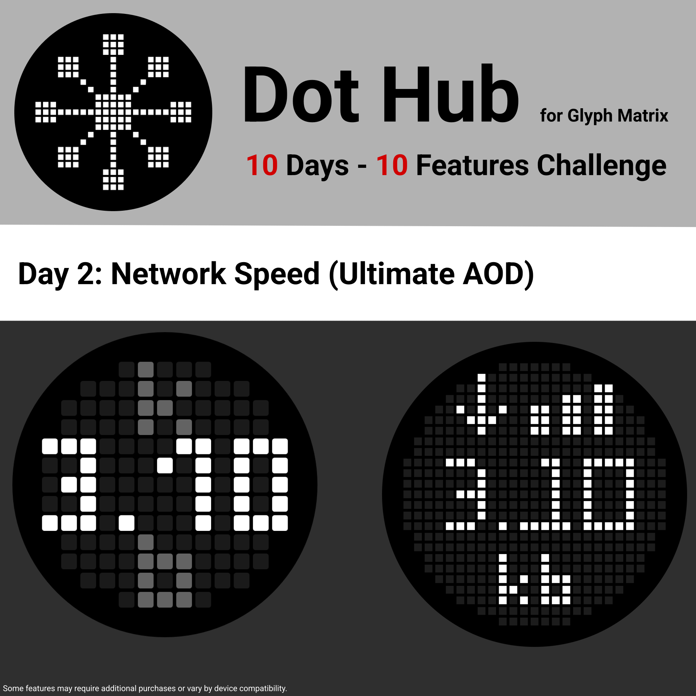
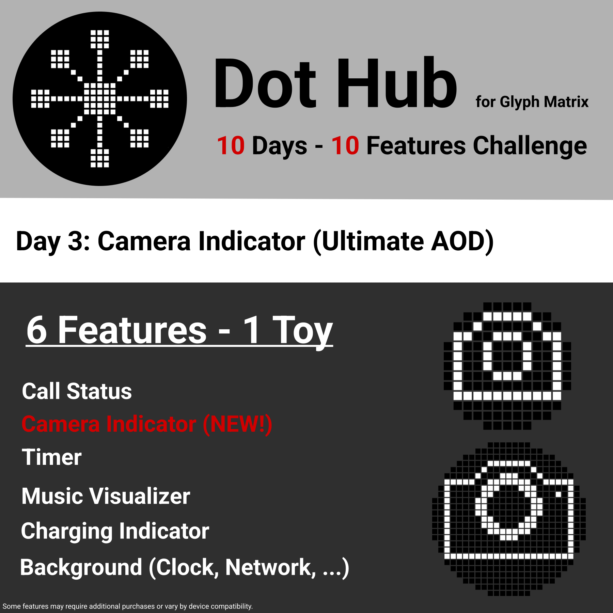
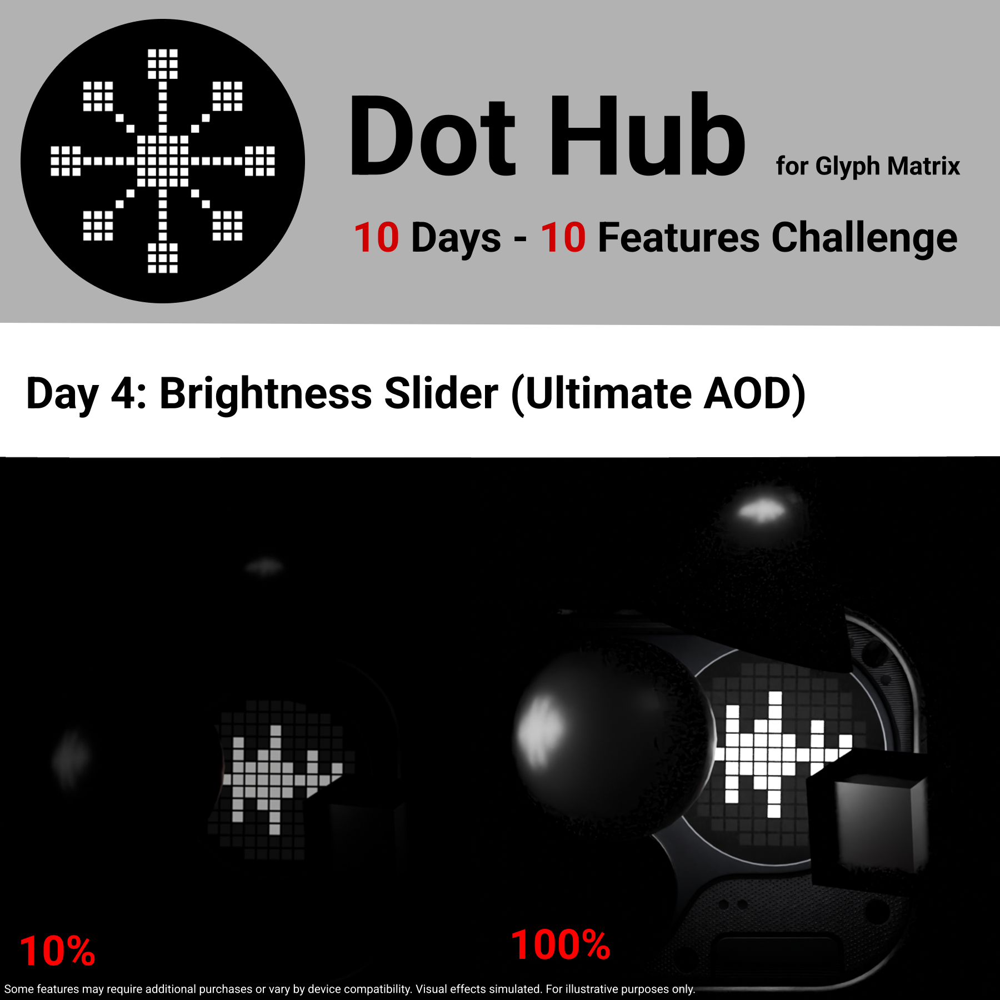
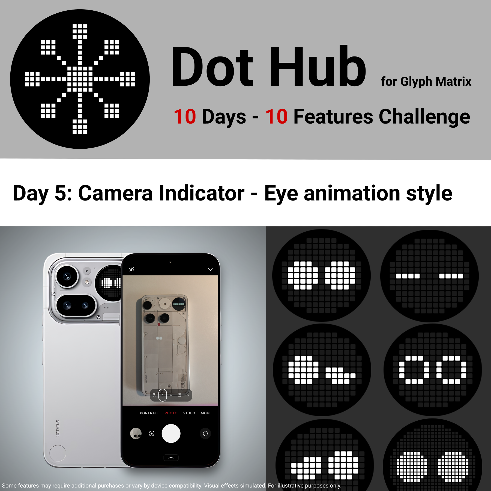
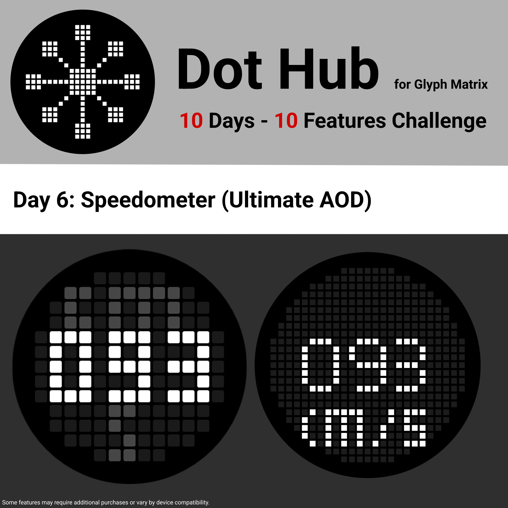
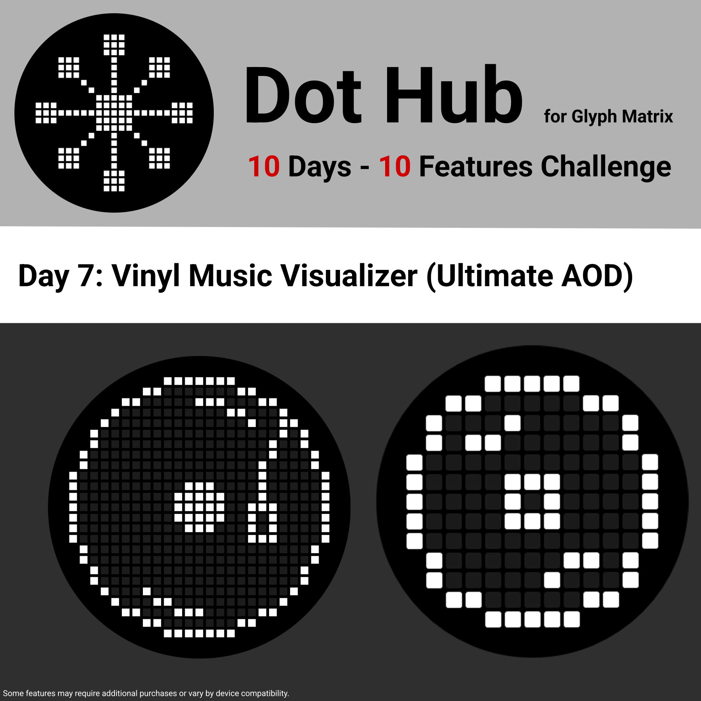
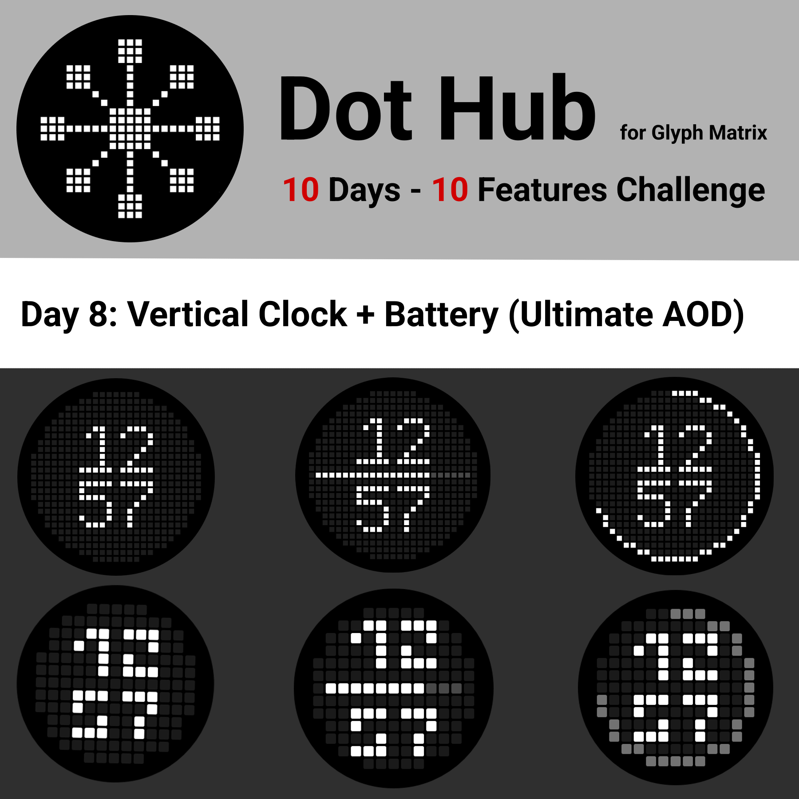
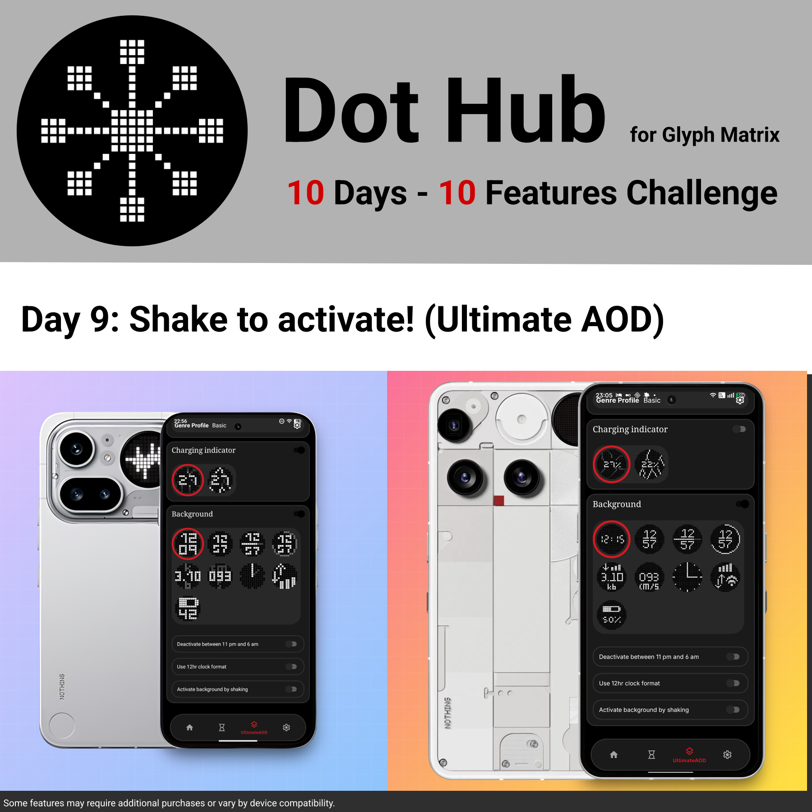
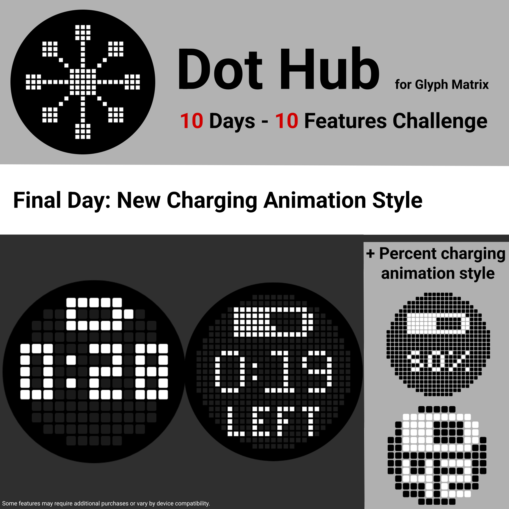

Overview
Over the course of 10 days, we implemented the following features and improvements:










- Day 1: Better Clock
- Day 2: Network Speed
- Day 3: Camera Indicator
- Day 4: Brightness Slider
- Day 5: Camera Indicator – Eye animation style
- Day 6: Speedometer animation style
- Day 7: Vinyl Music Visualizer
- Day 8: Vertical Clock UAOD
- Day 9: Shake to Wake
- Day 10: Remaining Time charging indicator animation
Hey everyone,
That's a wrap on the 10 Days, 10 Features Challenge. Ten days, ten features, and a whole lot of comments later, I just want to say a huge thank you to everyone who followed along, dropped a comment, asked questions, and shared feedback.
I won't lie, doing this every single day was pretty exhausting at times, but it was absolutely worth it. I learned a ton along the way, picked up some great ideas from your suggestions, and most of all I had a lot of fun. Seeing the community show up day after day is what made the whole thing special.
Thanks for being part of it, and for all the support around Dot Hub in general.
If you haven't checked it out yet, here's everything in one place:
- NClock on Google Play: Link
- Instagram: @nostream_tech
More to come. Thanks again, everyone.
– nostream